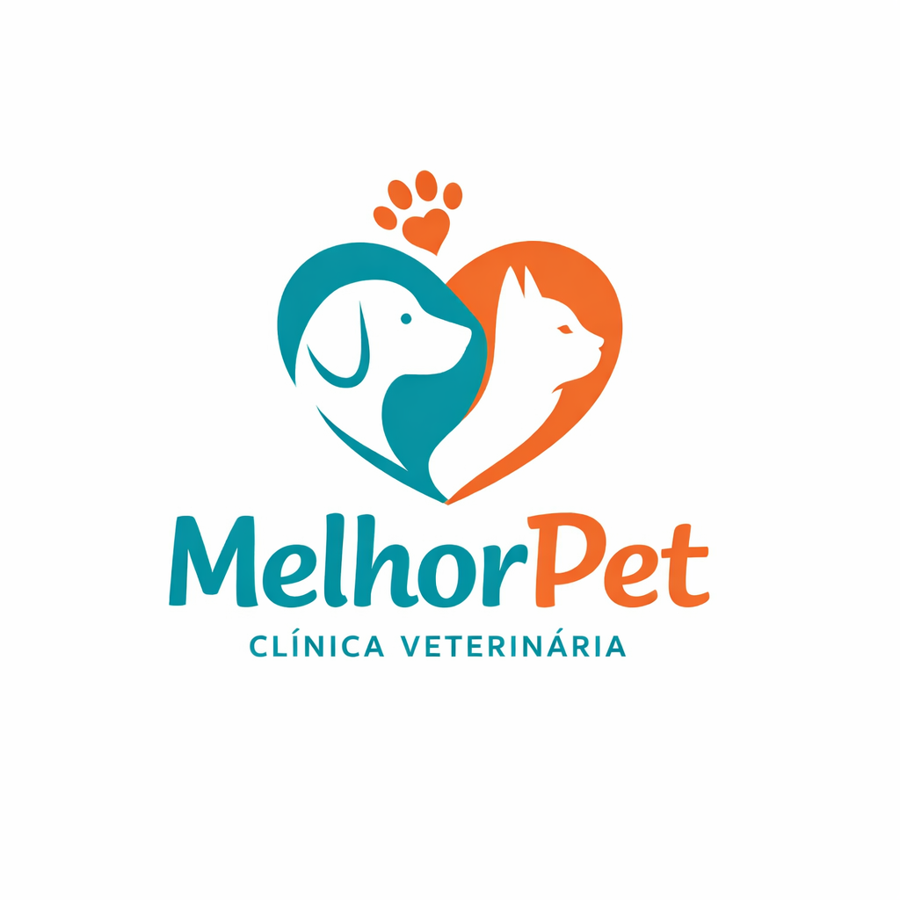

melhorPet
Sobre nos
A MelhorPet é uma clínica veterinária dedicada ao cuidado completo da saúde e do bem-estar dos animais de estimação. Com atendimento humanizado, profissionais qualificados e amor pelos pets, oferecemos serviços veterinários de confiança para garantir uma vida mais saudável, feliz e segura para quem faz parte da sua família.
Medicos
Os médicos veterinários da MelhorPet são profissionais altamente qualificados, apaixonados pelo cuidado animal e comprometidos com um atendimento ético, responsável e humanizado. Cada veterinário atua com atenção individual às necessidades de cada pet, utilizando conhecimento técnico, empatia e atualização constante para oferecer diagnósticos precisos e tratamentos eficazes.